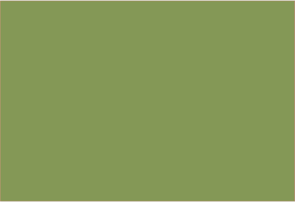
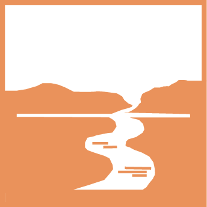
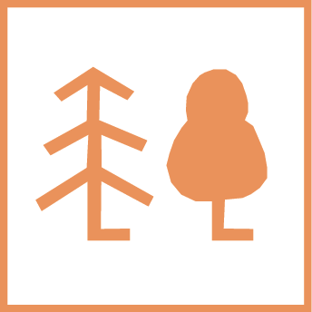
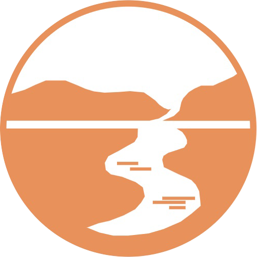

| до 5,0 | |
| 5,0-10,0 | |
| 10,1-15,0 | |
|  | понад 15,0 |
| регіональні ландшафтні парки | |
| заповідні урочища (площинні об’єкти) | |
| заповідні урочища (точкові об’єкти) | |
| заказники (площинні об’єкти) | |
| парки-пам’ятки садово-паркового мистецтва |
| ботанічні | |
|  | гідрологічні |
| іхтіологічні | |
| орнітологічні | |
|  | лісові |
| загальнозоологічні | |
| ентомологічні | |
| ландшафтні | |
| геологічніі |
| комплексні | |
| геологічні | |
|  | гідрологічні |
| ботанічні | |
| загальнозоологічні |